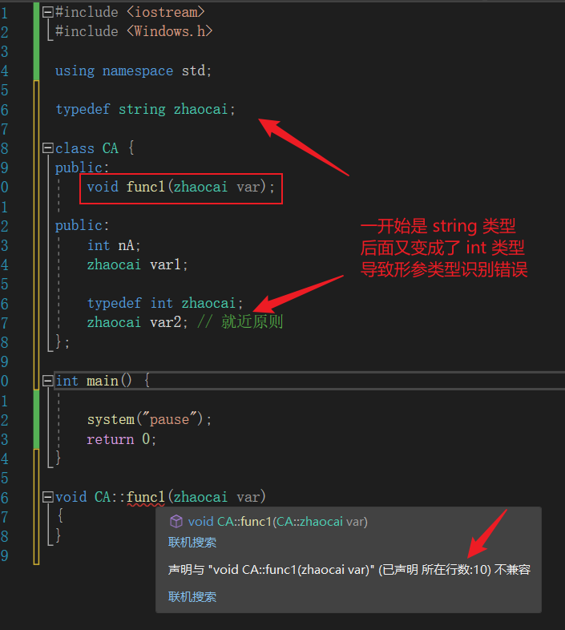
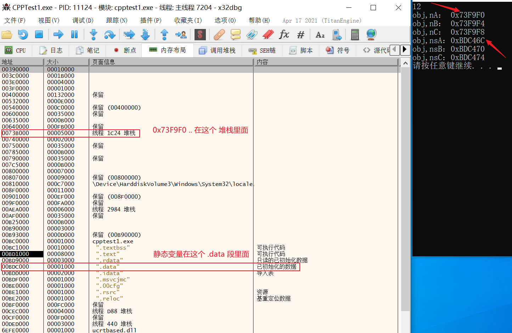
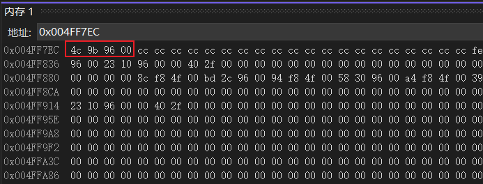
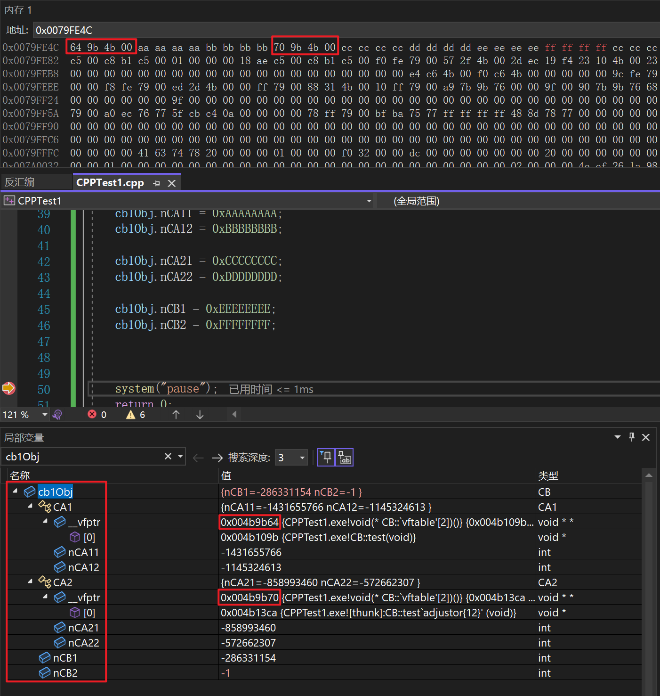
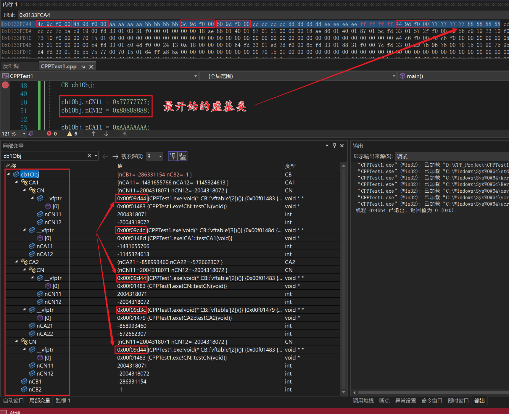

数据语义学
作用域
- 就近原则，先定义原则
-
:: 全局作用域 - 类内的 typedef 最好放到最前面，可以避免成员函数类型冲突。
#include <iostream>
#include <Windows.h>
using namespace std;
typedef string zhaocai;
class CA {
public:
void func1(zhaocai var);
public:
int nA;
zhaocai var1;
typedef int zhaocai; // func1(zhaocai var) 声明放到这之后就可以
zhaocai var2; // 就近原则
};
int main() {
system("pause");
return 0;
}
void CA::func1(zhaocai var) {
}

类成员存储
静态成员和普通成员的存储空间
#include <iostream>
#include <Windows.h>
using namespace std;
class CA {
public:
int nA;
int nB;
int nC;
static int nsA;
static int nsB;
static int nsC;
};
int CA::nsA = 0;
int CA::nsB = 0;
int CA::nsC = 0;
int main() {
CA obj;
cout << sizeof(obj) << endl;
obj.nA = 0xAAAAAAAA;
obj.nB = 0xBBBBBBBB;
obj.nC = 0xCCCCCCCC;
printf("obj,nA： 0x%X\r\n", &obj.nA);
printf("obj,nB： 0x%X\r\n", &obj.nB);
printf("obj,nC： 0x%X\r\n", &obj.nC);
printf("obj,nsA：0x%X\r\n", &obj.nsA);
printf("obj,nsB：0x%X\r\n", &obj.nsB);
printf("obj,nsC：0x%X\r\n", &obj.nsC);
system("pause");
return 0;
}
12
obj,nA： 0xB5F830
obj,nB： 0xB5F834
obj,nC： 0xB5F838
obj,nsA：0xBDC46C
obj,nsB：0xBDC470
obj,nsC：0xBDC474
请按任意键继续. . .
使用 x32_dbg 打开，"D:\xxx\VSProjects\CPPTest1\Debug\CPPTest1.exe"

单继承
对象和父类子对象指向同一空间，先摆放父类成员变量，再摆放子类成员变量
// 可以看到在内存中是连续的 16 cb1Obj.nCA1: 0x4FF9D0 cb1Obj.nCA2: 0x4FF9D4 cb1Obj.nCB1: 0x4FF9D8 cb1Obj.nCB2: 0x4FF9DC 请按任意键继续. . .#include <iostream> #include <Windows.h> using namespace std; class CA { public: int nCA1; int nCA2; }; class CB : public CA { public: int nCB1; int nCB2; }; int main() { CB cb1Obj; cout << sizeof(cb1Obj) << endl; cb1Obj.nCA1 = 0xAAAAAAAA; cb1Obj.nCA2 = 0xBBBBBBBB; cb1Obj.nCB1 = 0xDDDDDDDD; cb1Obj.nCB2 = 0xEEEEEEEE; printf("cb1Obj.nCA1: 0x%X\r\n", &cb1Obj.nCA1); printf("cb1Obj.nCA2: 0x%X\r\n", &cb1Obj.nCA2); printf("cb1Obj.nCB1: 0x%X\r\n", &cb1Obj.nCB1); printf("cb1Obj.nCB2: 0x%X\r\n", &cb1Obj.nCB2); system("pause"); return 0; }- 子类有虚函数，父类没有：子类的虚函数直接放在头部。
- 子类没有虚函数，父类有：父类的虚函数直接继承过来，放在头部。
- 子类有虚函数，父类也有虚函数：子类、父类共用虚表
#include <iostream>
#include <Windows.h>
using namespace std;
class CA {
public:
int nCA1;
int nCA2;
virtual void test() {
cout << "CA test~" << endl;
}
};
class CB : public CA {
public:
int nCB1;
int nCB2;
virtual void test() { // 换成 virtual void test1() 也一样
cout << "CB test~" << endl;
}
};
int main() {
CB cb1Obj;
system("pause");
return 0;
}

多继承
单多继承
#include <iostream>
#include <Windows.h>
using namespace std;
class CA1 {
public:
int nCA11;
int nCA12;
virtual void test() {
cout << "CA1 test~" << endl;
}
};
class CA2 {
public:
int nCA21;
int nCA22;
virtual void test() {
cout << "CA2 test~" << endl;
}
};
class CB : public CA1, public CA2{
public:
int nCB1;
int nCB2;
virtual void test() { // 换成 virtual void test1() 也一样
cout << "CB test~" << endl;
}
};
int main() {
CB cb1Obj;
cb1Obj.nCA11 = 0xAAAAAAAA;
cb1Obj.nCA12 = 0xBBBBBBBB;
cb1Obj.nCA21 = 0xCCCCCCCC;
cb1Obj.nCA22 = 0xDDDDDDDD;
cb1Obj.nCB1 = 0xEEEEEEEE;
cb1Obj.nCB2 = 0xFFFFFFFF;
system("pause");
return 0;
}
0x00CFFE60 // obj
64 9b 4b 00 // CB 和 CA1 共用的虚表指针
aa aa aa aa
bb bb bb bb
70 9b 4b 00 // CA2 的虚表指针
cc cc cc cc
dd dd dd dd
ee ee ee ee
ff ff ff ff

多-多继承
#include <iostream>
#include <Windows.h>
using namespace std;
class CN {
public:
int nCN11;
int nCN12;
virtual void testCN() {
cout << "CN test~" << endl;
}
};
class CA1 : virtual public CN { // 虚基类，解决多副本问题~
public:
int nCA11;
int nCA12;
virtual void testCA1() {
cout << "CA1 test~" << endl;
}
};
class CA2 : virtual public CN {
public:
int nCA21;
int nCA22;
virtual void testCA2() {
cout << "CA2 test~" << endl;
}
};
class CB : public CA1, public CA2{
public:
int nCB1;
int nCB2;
virtual void testCB() { // 换成 virtual void test1() 也一样
cout << "CB test~" << endl;
}
};
int main() {
CB cb1Obj;
cb1Obj.nCN11 = 0x77777777;
cb1Obj.nCN12 = 0x88888888;
cb1Obj.nCA11 = 0xAAAAAAAA;
cb1Obj.nCA12 = 0xBBBBBBBB;
cb1Obj.nCA21 = 0xCCCCCCCC;
cb1Obj.nCA22 = 0xDDDDDDDD;
cb1Obj.nCB1 = 0xEEEEEEEE;
cb1Obj.nCB2 = 0xFFFFFFFF;
system("pause");
return 0;
}
0x0133FCA4 // obj
4c 9c f0 00 // CB 和 CA1 的虚表指针
48 9d f0 00 // 因为虚基类的存在，空指针
aa aa aa aa // CA1 的成员变量 -- 第一个继承的类的成员
bb bb bb bb // CA1 的成员变量
3c 9d f0 00 // CA2 的虚表指针
50 9d f0 00 // 因为虚基类的存在，空指针
cc cc cc cc // CA2 的成员变量 -- 第二个继承的类的成员
dd dd dd dd // CA2 的成员变量
ee ee ee ee // CB 的成员变量 -- 本类的成员
ff ff ff ff // CB 的成员变量
44 9d f0 00 // CN 的虚表指针 -- 虚基类的成员
77 77 77 77 // CN 的成员变量
88 88 88 88 // CN 的成员变量

- CB 和第一个继承的 CA1 共用一个虚表
- 其余类独自一个虚表